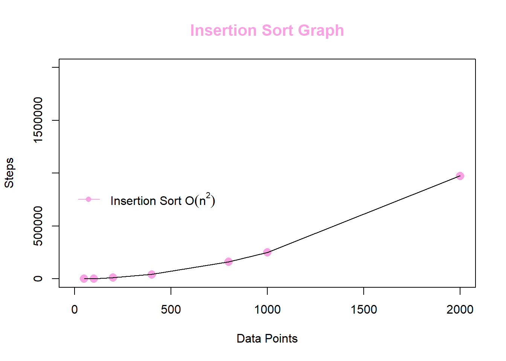

Sorting Algorithms
The sorting algorithms we built in this lab are the Simple Bubble Sort and Merge Sort. After making the algorithms, we ran them on different data points of sizes (50, 100, 200, 400, 800, 1000, 2000) and collected the number of steps for the data points in a text file. We then used the text file to plot the graphs for both algorithms.
Bubble Sort
Definition
Bubble sort checks and rechecks the relation between each component of the list. The method sorts the \(\mathrm{n}\) elements by linearly moving through the list where each pass completes \(\mathrm{n-1}\) comparisons and \(\mathrm{n-1}\) exchanges. After one pass, the largest integer-value should “bubble” up to the ArrayList’s high-indexed side –the operation repeats. After \(\mathrm{n-1}\) passes, the bubble sorting terminates.
Time Complexity
Worst Case Time Complexity:
The worst case has time complexity \(O(n^2)\); this occurs when the array is reverse sorted.
Best Case Time Complexity:
The best case has time complexity \(O(n)\). Bubble sort takes minimum time (Order of n) when elements are already sorted.
How does Bubble Sort act on the following list
list XXX: 5 1 4 2 8\[ \begin{align} \begin{matrix} 5 & 1 & 4 & 2 & 8 \end{matrix} \\ \begin{matrix} \mathbf{1} & \mathbf{5} & 4 & 2 & 8 \end{matrix} \\ \begin{matrix} 1 & \mathbf{4} & \mathbf{5} & 2 & 8 \end{matrix} \\ \begin{matrix} 1 & 4 & \mathbf{2} & \mathbf{5} & 8 \end{matrix} \\ \\ \begin{matrix} \mathbf{1} & \mathbf{4} & 2 & 5 & 8 \end{matrix} \\ \begin{matrix} 1 & \mathbf{2} & \mathbf{4} & 5 & 8 \end{matrix} \\ \begin{matrix} 1 & 2 & \mathbf{4} & \mathbf{5} & 8 \end{matrix} \\ \begin{matrix} 1 & 2 & 4 & \mathbf{5} & \mathbf{8} \end{matrix} \end{align} \]
- The algorithm needs one whole pass without any swap to know it is sorted.
\[ \begin{align} \begin{matrix} \mathbf{1} & \mathbf{2} & 4 & 5 & 8 \end{matrix} \\ \begin{matrix} 1 & \mathbf{2} & \mathbf{4} & 5 & 8 \end{matrix} \\ \begin{matrix} 1 & 2 & \mathbf{4} & \mathbf{5} & 8 \end{matrix} \\ \begin{matrix} 1 & 2 & 4 & \mathbf{5} & \mathbf{8} \end{matrix} \end{align} \]
Java Code
Steps
i. Method sorts the elements by linearly moving through the list
ii. After a pass, the largest value “bubbles” up the ArrayList
iii. Bubble sorting repeats for (n-1) passes
// Bubble Sort Class
import java.util.ArrayList;
public class BubbleSort {
// Used to count number of steps
private static int Bcount = 0;
// Getter
public static int getBcount(){
return Bcount;
}
// Setter
public static void resetBcount(){
Bcount = 0;
}
// Simple Bubble Sort -- O(n^2)
// Requires isLessThan from interface Relateable
// Uses a generic class T which extends Relateable
public static <T extends Relateable> ArrayList<T> Bubble(ArrayList<T> A){
// Depth of split levels:
// number of times n can be halved while value is greater than 1
if (A.size() <= 1) return A;
// Each pass of the bubbling phase performs n-1 comparisons and n-1 exchanges
// After n-1 passes, the method terminates
for(int passes = 0; passes < A.size()-1; passes++){
for(int index = 0; index < A.size() - passes - 1; index++){
Bcount++;
if (A.get(index).isLessThan(A.get(index + 1))){
T temp = A.get(index + 1);
A.set(index + 1, A.get(index));
A.set(index, temp);
}
}
}
return A;
}
}
Code Output
Execution Times
| DataPoints | Steps |
|---|---|
| 50 | 1225 |
| 100 | 4950 |
| 200 | 19900 |
| 400 | 79800 |
| 800 | 319600 |
| 1000 | 499500 |
| 2000 | 1999000 |
Summary
From the above execution times and graph, we can see that as the number of data points \(\mathrm{n}\) increases, the number of steps it takes to complete the bubble sort increases exponentially. In big-O notation, the Simple Bubble Sort Method for sorting \(\mathrm{n}\) elements of an array is \(O\mathbf{(n^2)}\); hence, the algorithm has a run time that grows quadratically as the input (data points) size grows.
Merge Sort
Definition
MergeSort is a recursive sorting technique that recursively splits, sorts, and reconstructs the data. This method recursively divides the data into two unsorted lists, sorts the two lists, and then merges the two sorted lists.
Time Complexity:
a. Merge Sort is a recursive algorithm and time complexity can be expressed as following recurrence relation: \(T(n) = 2T(n/2) + \theta(n)\)
b. The above recurrence can be solved either using the Recurrence Tree method or the Master method. The solution of the recurrence is \(\theta(n\log n)\).
c. \(\bigstar\) Time complexity of Merge Sort is \(\theta(n\log n)\) in all 3 cases (worst, average and best) as merge sort always divides the array into two halves and takes linear time to merge two halves.
Java Code.
i. Break the whole array down into two subarrays
ii. Sort the left half of the array (recursively)
iii. Sort the right half of the array (recursively) Merge the solutions
// Merge Sort Class
import java.util.ArrayList;
public class MergeSort {
private static int Mcount = 0;
// Getter
public static int getMcount(){
return Mcount;
}
// Merge Sort -- O(nlog2(n))
// Requires isLessthan from interface Relateable
// Uses a generic T which extends Relateable
// Public signature
// This nonrecursive part takes care of small lists
public static <T extends Relateable> ArrayList<T> MergeSort(ArrayList<T> A){
Mcount++;
if (A.size() <= 1) {return A;}
return RMergeSort(A);
}
// Recursive RMergeSort method--
// Private signature for the recursive part
// Requires isLessthan from interface Relateable
// Uses a generic T which extends Relateable
private static <T extends Relateable> ArrayList<T> RMergeSort(ArrayList<T> A){
// Middle index to divide the ArrayList into two halves
int mid = A.size() / 2;
// Create two temporary arrays:
ArrayList<T> B = new ArrayList<>(); // first half
ArrayList<T> C = new ArrayList<>(); // second half
for(int i = 0; i < mid; i++) {
B.add(A.get(i));
}
for(int i = mid; i < A.size(); i++) {
C.add(A.get(i));
}
// Call mergeSort for first half:
B = MergeSort(B);
// Call mergeSort for second half:
C = MergeSort(C);
// Merge the two halves sorted:
return Merge(B,C);
}
// Merge method-- merge A and B routine
// Requires isLessthan from interface Relateable
// Uses a generic T which extends Relateable
private static <T extends Relateable> ArrayList<T> Merge(ArrayList<T> A, ArrayList<T> B){
ArrayList<T> C = new ArrayList<>();
int j = 0;
int k = 0;
// Compares the elements of both sub-arrays one by one
while(j < A.size() && k < B.size()) {
if (A.get(j).isLessThan(B.get(k))) {
C.add(A.get(j));
j++;
}
else{
C.add(B.get(k));
k++;
}
}
while(j < A.size()) {
C.add(A.get(j));
j++;
}
while(k < B.size()) {
C.add(B.get(k));
k++;
}
return C; // sorted array
}
}
Code Output
Execution Times
| DataPoints | Steps |
|---|---|
| 50 | 99 |
| 100 | 199 |
| 200 | 399 |
| 400 | 799 |
| 800 | 1599 |
| 1000 | 1999 |
| 2000 | 3999 |

Summary
Each value \(\mathrm{n}\) in the data set must be sorted into a temporary array, allotted once before every single merge; therefore, we have \(O(\mathrm{n})\) compares over all the merges. From the above execution times and graph, we can see that as the number of data points \(\mathrm{n}\) increases, the number of steps it takes to complete the bubble sort increases logarithmically. In big-O notation, since there are \(\mathrm{\log{2}n}\) split levels, we have a time execution of \(O(\mathrm{n \log{n}})\); hence, the search algorithm has a run time that grows logarithmically as the input size grows.
Comparing Sort Algorithms
From the graph below, we can see that the number of steps to execute the Merge Sort method is significantly lower than the number of steps to execute the Bubble Sort method; hence, the Merge Sort is faster and more efficient than the Bubble Sort.
Questions
1. What non-sequential data structure, we have studied, does the logic of MergeSort() resemble?
MergeSort is a recursive sorting technique that recursively splits, sorts, and reconstructs the data. This method recursively divides the data into two unsorted lists, sorts the two lists, and then merges the two sorted lists. In big-O notation, we have a time execution of \(O(\mathrm{n \log{n}})\); hence, the search algorithm has a run time that grows logarithmically as the input size grows. Similar to MergeSort, binary search trees are nonlinear structures that execute in logarithmic time.
Insertion Sort
Definition
Definition. a Java sorting method where the sorted values locate to the low end of the array, and the unsorted values locate to the high end.
a. Insertion sort takes linear time when input array is sorted or almost sorted (maximum 1 or 2 elements are misplaced). All other sorting algorithms mentioned above will take more than linear time in their typical implementation.
b. total of \(n-1\) passes over the array, with a new unsorted value inserted each time
c. expected running time is \(\mathbb{O}\left(n^2\right)\) compares and data movements –most compares will lead to movement of a data value
d. best case running time performance is \(\mathbb{O}\left(n\right)\) comparisons –occurs for no movements of data within the array; therefore, it’s best to implement insertion sort on data that is nearly ordered
Time Complexity
On average, it is \(i/2\) positions out of order
| \(0 \;\) | \(1 \;\) | \(\dots\) | \(i-1\) | \(i\;\) | \(\dots\) | \(n-1\) |
And since this is done from \(1\) to \(n-1\), then we have the total cost as
\[\sum^{n-1}_{i=1} \frac{i}{2} = \frac{n(n+1)}{4}\]
Therefore, the average case running time of insertion sort is \(\mathbf{O(n^2)}\)
1. Show how Insertion Sort acts on the following List:
list X: 7 5 4 6 8 2\[ \begin{align} \begin{matrix} \mathbf{7} & 5 & 4 & 6 & 8 & 2 \end{matrix} \\ \begin{matrix} \mathbf{5} & \mathbf{7} & 4 & 6 & 8 & 2 \end{matrix} \\ \begin{matrix} \mathbf{4} & \mathbf{5} & \mathbf{7} & 6 & 8 & 2 \end{matrix} \\ \begin{matrix} \mathbf{4} & \mathbf{5} & \mathbf{6} & \mathbf{7} & 8 & 2 \end{matrix} \\ \begin{matrix} \mathbf{4} & \mathbf{5} & \mathbf{6} & \mathbf{7} & \mathbf{8} & 2 \end{matrix} \\ \begin{matrix} \mathbf{2} & \mathbf{4} & \mathbf{5} & \mathbf{6} & \mathbf{7} & \mathbf{8} \end{matrix} \end{align} \]
2. Consider an array of elements arr[5] = {5,4,3,2,1}, what are the steps of insertions done while doing insertion sort in the array.
arr[5] = {5,4,3,2,1}\[ \begin{align} \begin{matrix} 5 & 4 & 3 & 2 & 1 \end{matrix} \\ \begin{matrix} \mathbf{4} & \mathbf{5} & 3 & 2 & 1 \end{matrix} \\ \begin{matrix} \mathbf{3} & \mathbf{4} & \mathbf{5} & 2 & 1 \end{matrix} \\ \begin{matrix} \mathbf{2} & \mathbf{3} & \mathbf{4} & \mathbf{5} & 1 \end{matrix} \\ \begin{matrix} \mathbf{1} & \mathbf{2} & \mathbf{3} & \mathbf{4} & \mathbf{5} \end{matrix} \end{align} \]
Method to Insertion Sort
a generic type that extends the interface Relateable
a. create a LinkedList
b. initialize ICount
c. walk down ArrayList and insert each element into sorted LinkedList
d. repackage and return ArrayList
e. method to insert a new element myObj into a sorted LinkedList
- use a loop to traverse LinkedList
- begin with first element (smallest T) and find where myObj should go
f. debugging tool and method to dump out content in LinkedList
Java Code
Steps
i. Iterate through the array
ii. Shifting all of the elements to the right until we encounter the first element we don’t have to shift
iii. Place the new element into its proper place within the sorted subarray
import java.util.LinkedList;
import java.util.ListIterator;
import java.util.ArrayList;
public class InsertionSort {
private static int ICount;
public static int getICount(){
return ICount; }
// a generic type that extends the interface Relateable
public static <T extends Relateable> ArrayList<T> InsertionSort(ArrayList<T> myAL){
// create a LinkedList
LinkedList<T> mylist = new LinkedList<T>();
// initialize ICount
ICount = 0;
// walk down ArrayList and insert each into sorted LinkedList
for(T XXX: myAL){
insert(mylist, XXX); }
// repackage myAL from the LinkedList and return it
return myAL; }
// insert new element myObj into sorted LinkedList
public static <T extends Relateable> void insert(LinkedList<T> mylist, T myObj) {
// if myList is empty, add myObj and return
if (mylist.isEmpty()) {
ICount++;
mylist.add(myObj);
return; }
// use a loop to traverse LinkedList
// begin with first element (smallest T) and find where myObj goes
ListIterator current = mylist.listIterator();
while(current.hasNext()){
// get value and advance iterator
ICount++;
T temp = (T)(current.next());
// figure out out if I should add now or not
if (temp.isLessThan(myObj)){
continue; }
// add on the list iterator but where?
else{
current.add(myObj);
return; }}
// **************************
// if we get here, then I should add myObj at the end of the list
// ICount++;
// mylist.addLast(myObj);
// return; }
// method to dump out content in LinkedList
// debugging tool
private static <T> void dump (LinkedList<T> mylist){
ListIterator<T> current = mylist.listIterator();
for(int i=0; i< Math.min(15, mylist.size()); i++){
System.out.println((T)(current.next()).toString()); }}
}Code Output
Execution Times
At the worst case scenario for the algorithm, the whole array is descending. This is because in each iteration, we’ll have to move the whole sorted list by 1, which is \(O(n)\). We have to do this for each element in every array, which means it’s going to be bounded by \(O(n^2)\).
| DataPoints | Steps |
|---|---|
| 50 | 671 |
| 100 | 2395 |
| 200 | 9743 |
| 400 | 39658 |
| 800 | 161494 |
| 1000 | 251346 |
| 2000 | 974151 |

Conclusion
Sorting Techniques:
\[ \begin{align} &\text{How large of an array do you want } \mathcal{sorted} \text{ ? } \mathbf{20} \\ &\mathrm{Fisher} \text{ data file loaded }\dots \text{test file of size } \mathrm{20} \text{ created.} \\ &\text{For list size of } 20 \dots \\ &\qquad \Rightarrow \quad \text{Bubble sort number of steps: } 190 \\ &\qquad \Rightarrow \quad \text{Merge sort number of steps: } 39 \\ &\qquad \Rightarrow \quad \text{Insertion sort number of steps: } 20 \end{align} \]
From the graph below, we can see that the number of steps to execute the Merge Sort method is significantly lower than the number of steps to execute the Bubble Sort method; hence, the Merge Sort is faster and more efficient than the Bubble Sort.

References
[1] Bailey, D. A. (2003). Java structures: Data structures in Java for the principled programmer. McGraw-Hill, Boston, Mau.
[2] Gallardo, R., Gordon, J., Hommel, S., Kannan, S. and Zakhour, S. (2015). The Java tutorial a short course on the basics. Addison-Wesley, Upper Saddle River, NJ.